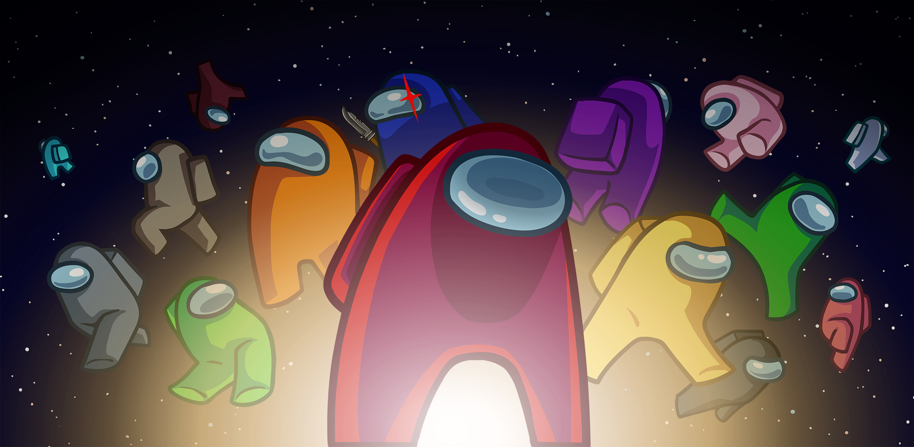

Among Us, a hit indie game that was widely during the pandemic is about being mischievous and being good at lying, but ironically, this game made our friend group closer.
Before Among Us became widely popular, a friend of mine introduced the game to us in the middle of the school day when nothing much was being done.
Not before long, our entire friend group was playing the game and we were enjoying ourselves during out downtimes in class.
While we were having fun, others were annoyed since we were a bit too loud, which is fair, since we did play loudly since we were enjoying ourselves a lot.
But it has always have been this case for our group and the rest of the class, since we were mostly just living within the little bubble of our friend group.
This rift between us has sometimes been a hindrace in class, but regardless, it is something I deem it to be normal since you can't really please everyone.

As time went on, our friend group became stronger together, since before we weren't really close with each other and we were mostly just classroom friends.
Sadly, the pandemic happened and we weren't able to meet each other physically and we only stayed within our homes to wait out the virus.
But whilst all this, we still found ways to play with each other, we played games like Valorant, Minecraft, and of course, Among Us.
Its quite funny how a game where we betray, lie, and kill each other, made us closer together, and while it did surface some issues within the group, I think acknowledging these issues are the first step of having a strong friend group.
For now, we still play games with each other, though not as frequent as back then, I still cherish the experiences and fun memories that we made.
I hope that in the future, everyone within among us in the group, will have a good future, and I hope that they will know that I will forever remember how a game about deceiving each other, made us closer together as friends.